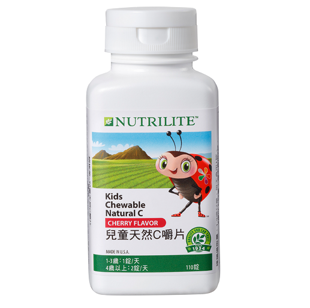

<div class="product_detail_content">
    <div class="picture">
        <div id="owl-demo" class="owl-carousel owl-theme">
            <div class="item"><span class="volume">110 錠</span></div>
        </div>
    </div>
    <div class="infomation">
        <h3>兒童天然Ｃ嚼片<br><span class="small">活力CC 健康滿分</span></h3>
        <p>蔬果的維他命C有助骨骼牙齒，但寶貝不愛吃？本產品來自紐崔萊天然有機農場，以維生素C含量豐富的針葉櫻桃濃縮製成，甜美櫻桃味讓寶貝超愛吃！</p>
        <h4>產品特色</h4>
        <ul class="list_dot">
            <li>每錠含有相當於19粒蘋果的維生素C</li>
            <li>含有來自針葉櫻桃濃縮素的天然維生素C</li>
            <li>添加幫助維生素C吸收的柑橘生物類黃酮</li>
            <li>可口的櫻桃風味，食用方便</li>
        </ul>
        <!-- <a class="download" href="pdf/products_kids_natural_c.pdf" target="_blank">營養成分PDF</a> -->
        <div class="btnWrap">
            <div class="showDetail">營養成分</div>
            <a class="download" href="pdf/products_kids_natural_c.pdf" target="_blank">下載PDF</a>
            <a class="buynow" href="https://shop.amway.com.tw/%E7%87%9F%E9%A4%8A%E4%BF%9D%E5%81%A5/%E5%85%92%E7%AB%A5%E4%BF%9D%E5%81%A5%E7%B3%BB%E5%88%97/%E5%85%92%E7%AB%A5%E5%A4%A9%E7%84%B6C%E5%9A%BC%E7%89%87/p/2552" target="_blank">立即購買</a>
        </div>
        <div class="detailTable">
            <table class="tableizer-table">
                <thead>
                    <tr class="tableizer-firstrow">
                        <th>重要營養成分</th>
                        <th>每錠含</th>
                    </tr>
                </thead>
                <tbody>
                    <tr>
                        <td>維生素C</td>
                        <td>100 毫克</td>
                    </tr>
                </tbody>
            </table>
        </div>
    </div>
</div>
